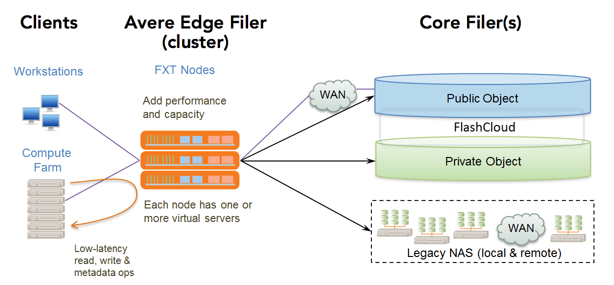
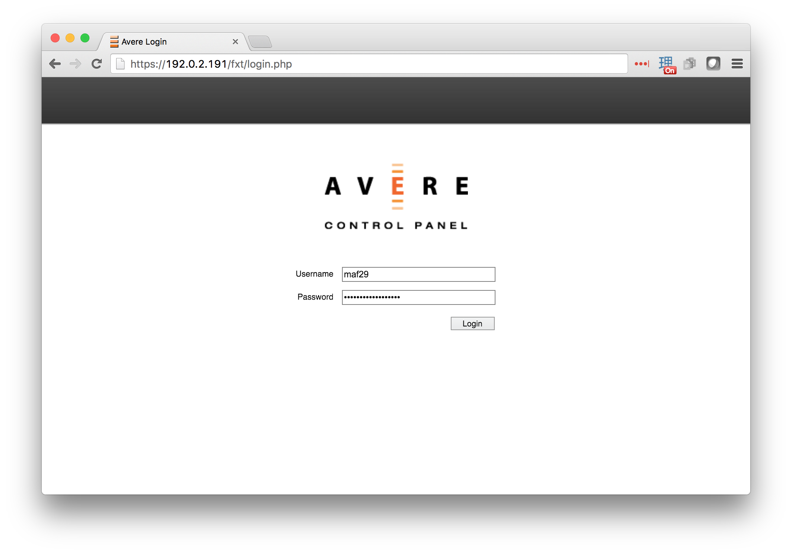
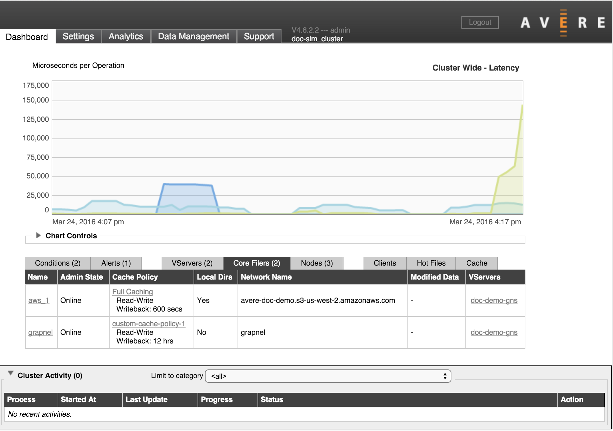

About Avere OS
This section gives a basic overview of an Avere cluster, and describes how to get started configuring a cluster by using the Avere Control Panel.
Avere Storage Optimization Solutions
Avere clusters and software provide a high-performance interface that accelerates client access to one or more back-end storage systems (core filers). Storage systems can be cloud object stores, network-attached storage (NAS) appliances, or a mixture of types.
Avere storage optimization consists of the Avere OS software running on one or more FXT Series nodes. FXT nodes can be physical appliances or virtual servers (a virtual FXT node is also called a vFXT). Nodes work together as an Avere cluster. The cluster’s performance scales nearly linearly with each node added to the cluster.
When a file is being actively accessed, Avere OS caches its content and metadata on high-performance nodes in the cluster, circumventing the overhead of sending each read and write request to back-end storage. When file usage becomes less frequent, the cluster transfers that file to the core filer and removes it from the working set, freeing up resources for files that are in higher demand.
Avere OS regularly writes modified files from the cluster back to the core filers to ensure data integrity. The timing of these writes can be influenced by various factors:
- Time since last written - You can set a maximum time delay before changes are synchronized from the cache to the core filer
- Space available in the cache - The cache needs to free space for other files that are being accessed more frequently
- Amount of unwritten files - Avere OS automatically writes files to the back end storage when modified files reach a set percentage of data in the cache
- Set schedule - You can configure the cluster to flush data to the back-end core filers at specific times - for example, to ensure that back-end storage is in sync before its regular backup
The optional High Availability (HA) feature, which stores copies of one node’s cached files on another cluster node, can provide additional protection in the event of a system outage.
Avere System Overview
{kind=link}
| Avere Edge Filer | Core Filer |
|
|
Clients connected to an Avere OS FXT cluster can access and modify files regardless of whether or not they are cached in the working set. Avere OS provides several preconfigured cache policies to set how the cluster cache processes read and write operations from clients, and administrators can create custom cache policy settings as well. Refer to Cache Policies for more information.
The Avere solution can be deployed without significant disruption to your current storage or network infrastructure. Because the cluster is placed between your clients and your core filer, you can enable or disable it as needed.
About This Document
This guide is written for system administrators who need to manage an Avere cluster. It assumes that you have a basic knowledge of networked storage, including network access protocols such as the Network File System (NFS) and the Common Internet File System (CIFS).
It also assumes that you have an Avere cluster installed and configured as described in the installation document for your FXT hardware or vFXT platform.
For an Avere FXT cluster, read the FXT Cluster Creation Guide and follow its instructions for creating and doing basic setup steps before referring to this guide for advanced settings and daily operations.
The following highlights are used in this document:
Caution
A caution indicates that failure to follow directions in the statement can result in damage to equipment or loss of data.
Important
An important statement presents clarifying information or specific instructions.
Note
A note presents commentary, sidelights, or interesting points of information.
Prerequisites for Administering an Avere Cluster
Avere OS supports core filer access using NFS version 3, SMB (CIFS), and SMB2.0 protocols.
The cluster is managed by using the Avere Control Panel, which is a browser-based graphical interface to the Avere cluster. (A command-line interface also exists; contact Avere Global Services to learn more.)
This guide assumes that you have a cluster with at least one node and one virtual server (vserver) currently set up and running. Refer to the installation guide for your type of cluster for details:
- FXT 5000 Series Installation Guide
- vFXT Installation Guide for Amazon Web Services
- vFXT Installation Guide for Google Cloud Platform
In addition, you will need to plan for the following:
- Setting up exports on your particular core filer, as described in Controlling Access to Core Filer Exports.
- Deciding on an authentication method.
- Deciding how to set up network access to your cluster, described in Configuring Network Services for an Avere Cluster.
- Planning how to set the cache policy for each core filer. The cache settings will generally depend on whether you are primarily using the core filer for a high rate of data exchange, or to store data long-term, as described in Cache Policies As you add core filers to the cluster, you will need to set the cache policy on each one.
Installing a Feature License
Several Avere OS options, particularly FlashCloudTM, FlashMove®, and FlashMirror®, require a separate license. After you purchase a license, you must send your license ID to Avere Global Services, and they will provide you with a license key.
The process is described in detail in Appendix A: Adding or Removing Feature Licenses.
Using the Avere Control Panel
The cluster is managed by using the Avere Control Panel, a secure, browser-based application.
The Avere Control Panel presents a single system image of the cluster and all of its constituent nodes; you can manage the entire cluster or any individual node from the Avere Control Panel.
Browser requirements include the following:
- A standards-compliant browser that can access the management IP address on the cluster’s network. Avere Systems supports the three most recent major releases of Mozilla Firefox® Google© Chrome, Apple Safari®, and Microsoft Internet Explorer®. The browser must have JavaScript enabled.
- If your browser supports the DNS Service Discovery (DNS-SD or Bonjour®) protocol, either through a plug-in, or natively (as in the case of Apple Safari), you can use it to discover Avere clusters without needing to know machine names or IP addresses. The browser’s workstation must run on the same subnet as the cluster’s management interface.
In addition, any workstation used to administer your Avere cluster must meet the minimum security requirements described in Appendix B: Security Requirements for Administrative Systems. (The security requirements apply to systems used with the command-line configuration interface as well as those used with the graphical interface.)
Avere Control Panel Access
Two types of access are available for the Avere Control Panel:
- Full Access allows administrators to configure cluster settings as well as to monitor the cluster.
- Read-Only access allows regular users to monitor the cluster, but not to update the cluster configuration.
Configure user access to the cluster control panel by using the Users settings page, or the Login Services settings page, or both.
Users Page
On the Users settings page, you can configure individual usernames and passwords for logging in to the cluster control panel.
Individual user accounts can be set for read-only access or full access.
Note
You cannot create read-only user accounts from the Login Services page. To create accounts that can monitor the cluster but that cannot change settings, use the Users page or the command-line interface.
Login Services Page
On the Login Services settings page, you can configure an Active Directory or LDAP server to read a group containing administrator usernames. This system can be easier to maintain than locally defined users.
- With an AD server, you can create a group named
AvereAdminsto automatically give cluster configuration privileges to certain users. Any user in AvereAdmins is assumed to have full access privileges. You must create this group in your AD server manually. - You can use both an AD/LDAP server and local login accounts at the same time.
Read Administration > Users and Administration > Login Services for more details.
Logging In to the Avere Control Panel
To log in to the cluster for management and monitoring tasks:
Use a web browser to go to https://management_IP_address/fxt, where management_IP_address is the cluster’s management IP address.
Alternatively, if you are using a browser that supports the DNS-SD protocol, you can navigate to the bookmark labeled
Avere Cluster Management: cluster_name.Note
If your browser first prompts you to accept an SSL certificate from the Avere system, accept the certificate.
The Avere Control Panel Login page is displayed.
In the Username field, enter a user name.
In the Password field, enter the corresponding password.
{kind=link}
The Avere Control Panel loads and displays the Dashboard tab.
Control Panel Tabs
{kind=link}
The Avere Control Panel is divided into the following tabbed pages. (The release number of the currently installed Avere OS release is listed to the right of the tabs.) Click any tab to show the associated page.
Dashboard – This is the Avere Control Panel’s default tab. It displays performance graphs and statistics, system alerts, and information about virtual servers (vservers), FXT nodes, clients, and hot files.
Refer to Using the Avere Control Panel Dashboard for more information.
Settings – This tab gives you access to the system configuration. For an overview of the available settings and links to detailed instructions about using each settings page, read Avere Control Panel Settings.
Analytics – This tab enables you to obtain detailed, in-depth information about activity on your cluster and storage network.
Data Management – This tab enables you to move and mirror data on NAS servers and cloud object stores that are defined as core filers to the cluster. Data management operations can run concurrently with client access to data, and do not interrupt client access.
Read the Data Management Guide for detailed information about the optional FlashMove and FlashMirror features.
Support – This tab has system details and tools for working collaboratively with Avere Global Services if problems occur.
Refer to Using the Avere Control Panel Support Tab for more information.
If a condition occurs that affect the operation of the cluster, the Avere Control Panel displays a system error (red) or alert (yellow) at its upper left-hand corner. Clicking on the notification takes you to the dashboard, where you can view problem details and troubleshooting information.
You can view pop-up help text for items on the Avere Control Panel screen by moving your cursor to the left of the item’s label. A question mark icon appears; hold your cursor over the question mark to show help text for that item.